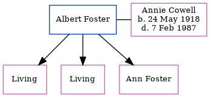

Albert S Foster
[ Home ] | [ Calendar ] | [ Surnames Index ] | [ Census Index ] | [ Family History ]Albert Foster, the husband of Annie Cowell (the first cousin once-removed on the mother's side of Nigel Horne), and married Annie (with whom he had 3 children: Marjorie E, Edith N and Ann, along with 2 surviving children) in Thanet, Kent, England around Feb 19351.
Citations
- England & Wales, Marriage Index: 1916-2005 Online publication - Provo, UT, USA: The Generations Network, Inc., 2009.Original data - General Register Office. England and Wales Civil Registration Indexes. London, England: General Register Office. © Crown copyright. Published by permission of the Cont
Family Tree
Generated by ged2site. Last updated on Jun 11, 2024